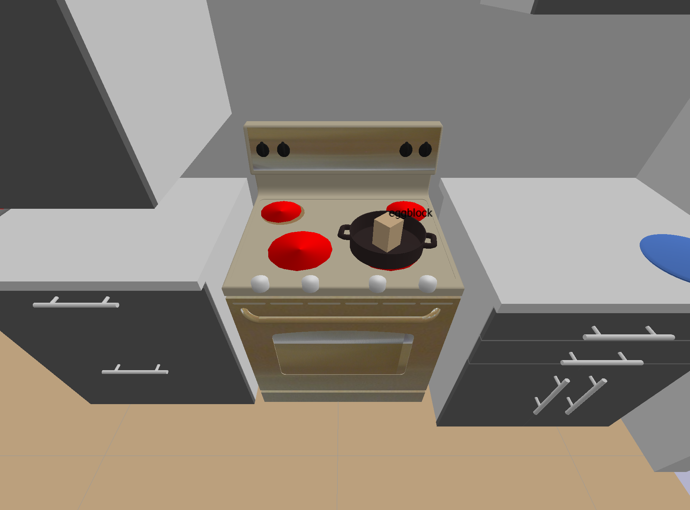

LISDF = LIS extended version of SDF#
The LISDF format has a few additional tags inside <world></world> compared to SDF:
- add object and robot models with
<include>
<uri>URDF_file</uri>
<static>true/false</static>
<pose>x y z r p y</pose>
<scale> an integer to scale model .obj with original ratio</scale>
</include>
- describe camera pose in a way that's easy to export from PyBullet
<gui>
<camera name="default_camera" definition_type="lookat">
<xyz>3 6 3</xyz>
<point_to>0 6 1</point_to>
</camera>
</gui>
apart from what SDF originally supports
<gui>
<camera name="default_camera" definition_type="pose">
<pose>3 6 3 0 -2.15 0</pose>
</camera>
</gui>
Test Visualize LISDF#
You may visualize your LISDF in PyBullet with the following code:
cd tests
python test_pybullet_lisdf -path path/to/lisdf
For example, running with the scene
python test_pybullet_lisdf -path assets/scenes/kitchen_counter.lisdf
results in Pybullet simulation below with the specified camera pose targeted at the pot.
